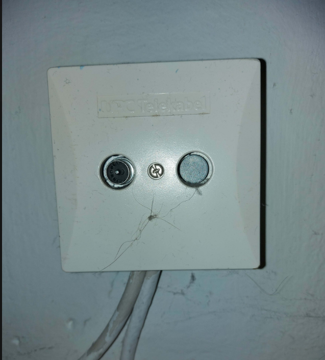

ich brauche einen ganz normalen Internettarif, OHNE zusätzliches Telefon/TV oder sonst was.
Außerdem würde ich einen Kabeltarif bevorzugen, nachdem die anscheinend stabiler sind und hier eher die versprochenen Downloadraten erreicht werden, als bei mobilen Cubes mit LTE.
Die einzigen Tarife, die wohl für mich in Frage kommen würden, sind die Gigakraft-Tarife, aber anscheinend ist dabei ein Festnetz-Telefon inkludiert, das ich aber absolut nicht brauche. Bei den Gigakraft-Gaming-Tarifen ist, wie es scheint, keins inkludiert, die interessieren mich aber nicht, weil ich die erhöhten Upload-Werte nicht brauch.
Muss ich dieses Telefon dazunehmen, und muss ich dann extra Grundgebühr oder sonst was zahlen? Das wäre ja nicht sehr cool.
Gibts noch andere Tarife, die möglich wären? Anscheinend gibt es einige Tarife nicht mehr online zu finden ??
Leider ist die Website derartig unübersichtlich, dass man sich schwer tut, sowas selber herauszufinden.
LG
El Kris
IT-Freak
Wenn die Telefonie in dem Paket dabei ist, dann kostet diese nichts extra.
Wenn man es nicht nutzt und die Nummer nicht im Telefonbuch eintragen lässt, hat man dadurch auch keinen Nachteil.
(Kosten würden entstehen, wenn man mit der Festnetznummer jemanden aktiv anruft, das ist aber bei festnetztarifen normal)
NTM
Hey
@El Kris
Die gigakraft Tarife über das Coax-Kabel Netz, sowie die Magenta Fix DSL-Tarife haben, allesamt die Digital-Telefon Option inkludiert.
So ein Anschluss hätte also auch eine Telefonnummer und bietet die Möglichkeit Netzintern, ohne extra Kosten zu telefonieren. Für Gespräche in andere Netze würden die Kosten pro Minute verrechnet werden. Einen Telefon-Apparat würde man aber nicht dazu bekommen.
Die Tarife gigakraft Tarife über das Coax-Kabel Netz gibt es nicht ohne Digital-Telefon, wenn man es aber nicht nutzt entstehen auch keine Zusatzkosten.
Es gäbe übrigens bei Bestellung per Telefon oder im Shop die Möglichkeit die gigakraft Terife im Coax-Kabel Netz ohne Bindung zu bekommen, wenn man auf die aktuelle Aktion (ohne Aktivierungsgebühr und die ersten drei Monate keine Grundgebühr) verzichtet.
LG NTM
Bearbeitet
von NTM
El Kris
Vielen Dank für die schnellen Antworten!
Ich kenn mich jetzt aus
@ NTM "Es gäbe übrigens bei Bestellung per Telefon oder im Shop die Möglichkeit die gigakraft Terife im Coax-Kabel Netz ohne Bindung zu bekommen, wenn man.." -> Super, danke für den Tipp. Wäre toll, wenn man diese Wahl auch gleich bei Online-Bestellung dabei hätte.
Noch eine letzte Frage: Wenn ich die Wahl habe, wären ein Kabeltarif (gigakraft) mit ähnlichen Downloadwerten besser und stabiler, als die anderen Techniken LTE, Hybrid, DSL, usw? Oder kann man das so nicht sagen?
LG El Kris
Bearbeitet
von El Kris
Rexalius2000
Also wenn du Coax im Haus hast, würde ich auf jedenfall von anderen Technologien speziell LTE Abstand nehmen . Du kannst aber wenn du lust hast deine DSL Leitung gerne checken was an Geschwindigkeit möglich ist.
@Rexalius2000 Verstehe, danke
Laut der Seite scheint das nicht sehr viel zu sein oder - zwischen 10 und 16 mbit?
Bin leider ein ziemlicher Laie und fange mit den meisten Zahlen hier nicht viel an x)
In dem Fall würde ich bei einem Kabeltarif bleiben.
Laut der magenta-Seite und der Auskunft der Serviceline ist gigakraft bei mir erhältlich. Ich war mir nur unsicher, da mir die Hausverwaltung gesagt hatte, dass es bei mir keine Glasfaser gibt. Aber anscheinend gehen die Glasfaserleitungen bis zu einem Verteiler in der Nähe und dann von dort mit älteren Kabeln zu meiner Wohnung.
Könnte mir das vielleicht noch jemand bestätigen, dass ich auf diese Art Kabeltarife bekommen kann? Habe nämlich einen TV-Stecker in meiner Wohnung.
Also laut Abfrage erhältst du mit Bonding sprich 4 Kupferdrähten der A1Telekom Austria über VDSL2 ( Very High Speed Digital Subscriber Line) um die 80 MBit/s im Download und 5 MBit/s im Upload (Herstellungskosten bei einem Alternativ Provider derzeit 299€ für diese Technologie). A1 bietet das aber nur bei Business Kunden derzeit an und nicht für Private außer bei so manchen eingemieteten.
Über 2 Kupferdrähte(Kostenlose Standartherstellung sind es 30MBit/s im Download und 5 MBit/s im Upload) .
Du musst nicht unbedingt FTTH (Glasfaser bis ins Haus) haben um in den Genuss eines gigakraft Anschluss zu kommen. Wenn du so eine ähnliche Dose wie im Bild in deiner Wohnung/Haus hast, sollte die Herstellung kein Problem sein. Hätte ich die Wahl würde ich jedenfalls mich immer für die Coax Variante entscheiden.

Bearbeitet
von Rexalius2000
NTM
Die gigakraft Tarife werden eben über Coax-Kabel hergestellt, dass gut alte TV-Kabel des ehemaligen UPC Netz.
Da geht die Glasfaser in der Regel nur bis zu einem Verteiler.
Bei neuern Häusern kann die Glasfaser aber auch ins Haus gehen und erst dann auf Coax-Kabel umgewandelt werden.
Und über DSL wären immerhin 32,8/7,5 Mbit/s (Down/Up) möglich.
{kind=link}
{kind=link}
{kind=link}